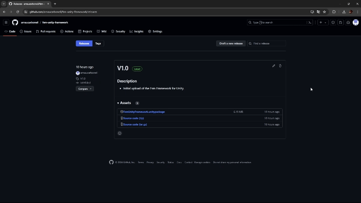
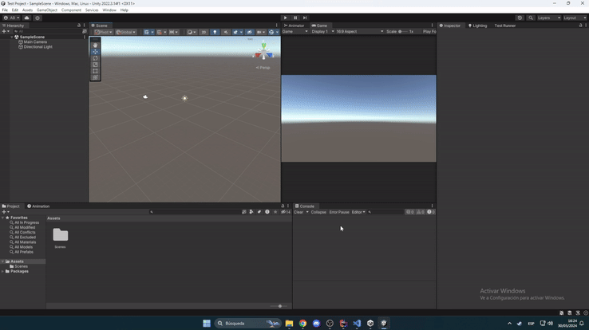

Getting Started with FSM Unity Framework
Welcome to the FSM Unity Framework! This framework is designed to help developers implement finite state machines in their Unity projects efficiently. With a user-friendly interface and powerful features, you can easily manage complex game states and transitions.
Installation Process
To install the FSM Unity Framework, follow these steps:
- Download the Package:
- Visit the GitHub Repository to find the latest release of the package.
- Download the file called
FsmUnityFramework.unitypackage.

- Import the Package:
- Open your Unity project.
- Double-click the downloaded
FsmUnityFramework.unitypackagefile. - In your Unity project, a new package will appear with all the folders inside. Select all the components you want to import.

- Install URP (Optional): Universal Render Pipeline (URP) is a Unity library that provides a scalable and highly efficient rendering pipeline. In this project, URP has been exclusively used to enhance the visual quality of the test scene with materials that require this rendering pipeline. If your project does not have URP configured or if you want to use the test scene along with the materials and characters, follow these steps:
- Open the Unity Editor.
- Go to Window -> Package Manager.
- Select the "Unity Registry" tab.
- Search for "Universal RP" or "Universal Render Pipeline".
- Click on the package and then click the "Install" button at the bottom right.
- Once installed, configure URP in your project by going to Edit -> Project Settings -> Graphics and dragging the
_URPasset imported from the tool package into the "Scriptable Render Pipeline Settings" section.

Install AI Navigation:
- AI Navigation is an essential library for enemy navigation and behavior within the game.
- Follow the installation process provided below:
- Step 1: Create or Open a Unity Project.
- Step 2: Install the AI Navigation Package.
- Open the Unity Editor.
- Go to Window -> Package Manager.
- Select the "Unity Registry" tab.
- Search for "AI Navigation" or "AI Pathfinding".
- Click on the package and then click the "Install" button at the bottom right.
Install ProBuild:
- ProBuild is a library used for level construction and management in your game.
- Follow the installation process provided below:
- Step 1: Create or Open a Unity Project.
- Step 2: Install the ProBuild Package.
- Open the Unity Editor.
- Go to Window -> Package Manager.
- Select the "Unity Registry" tab.
- Search for "ProBuild" or "Level Management".
- Click on the package and then click the "Install" button at the bottom right.
Once you have completed these steps, the FSM Unity Framework will be successfully imported into your Unity project, and you can start using it to create and manage finite state machines!